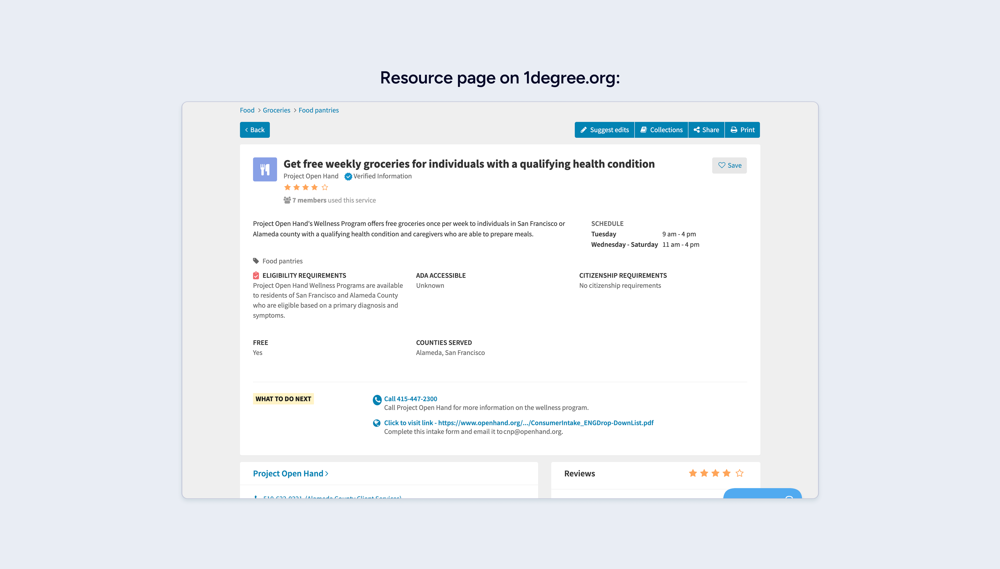
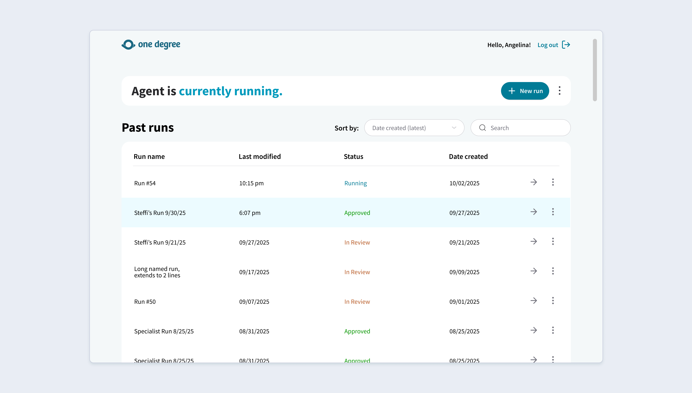
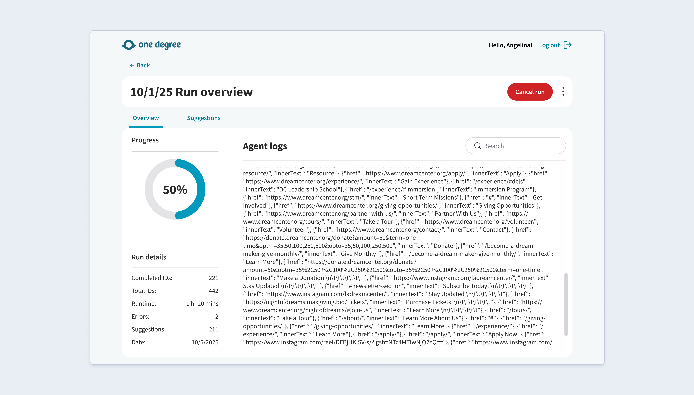
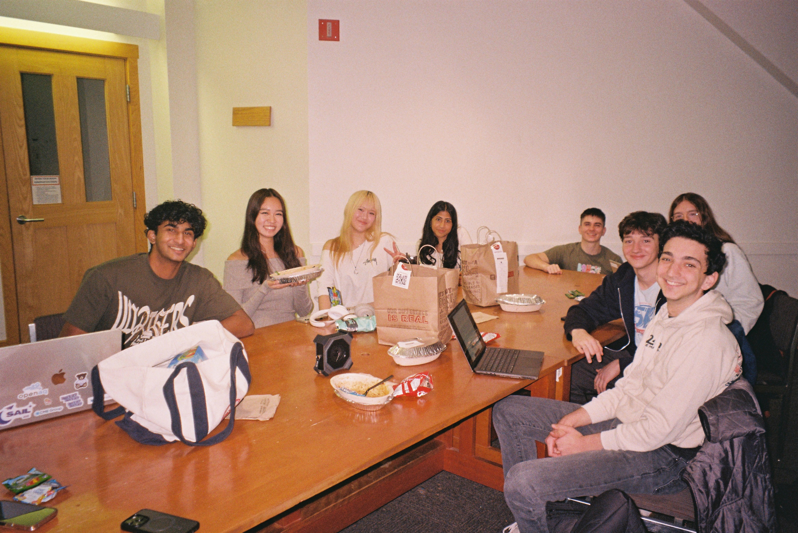

Designing an AI agent and dashboard for One Degree to keep 26,000+ resource listings up to date.
A dashboard where Resource Specialists and Admins run an AI agent that refreshes resource listings — then review, verify, and approve its suggestions before anything goes live.
Overview
The Client
One Degree is a nonprofit that helps people find safety-net resources — healthcare, housing, social services — with 26,000+ listings serving 600,000+ users.
The Task
Design the agent dashboard from the ground up — where staff run an AI agent and review its suggested updates before they reach the live platform.
My Impact
Designed the main dashboard, run overview and flow, and the suggestion review-and-approve experience — the core loop specialists live in.

One Degree's listings only help people if they're up-to-date. Right now, the updating is all done manually.
Every year, volunteers and staff keep listings accurate through a process called Refresh — visiting each resource's website by hand and comparing every field against what One Degree has stored. Across 26,000+ resources, that doesn't scale.
Problem
Keeping these resources up-to-date is tedious.
The Refresh process leaned almost entirely on manual effort. Working through the PRD with One Degree, three pain points shaped what we built.
✦Every field gets checked by hand
Volunteers open each resource's website and compare description, links, and enrollment steps against One Degree's stored info — one field at a time, one resource at a time.
✦Updates go through a stack of forms
Updates go in through a series of forms, then wait on Resource Specialist review. The handoff is slow, and it's easy for the queue to fall behind.
✦Listings slowly fall out of date
Resource Specialists' own edits skip review entirely, and with this much manual work, listings quietly drift out of date — exactly what users can't afford.
Our Solution
Agent Dashboard
Where Resource Specialists start agent runs, watch progress in real time, and review, edit, and approve the agent's suggested updates.
Admin Dashboard
Where Admins configure which resources and fields the agent updates, and oversee specialist runs and approvals.
Research & Goal
Resource Specialists review the agent's work. Admins decide what it works on.
Resource Specialists want to review, edit, and approve agent suggestions — and see where the agent got its info. Admins want to configure runs and oversee approvals.
✦Goal 1: Cut the manual work without losing accuracy
Reduce the reliance on manual updates and streamline Refresh: runs start from a dashboard, and approved changes push straight to One Degree with a single click — no re-entering anything by hand.
✦Goal 2: Make the agent's suggestions easy to trust
Every suggestion carries a confidence score, source links, and a clear diff against current info — so specialists can oversee, verify, and refine each one before it ever goes live.
Process
It all comes down to one loop: run, review, approve.
Before designing screens, I mapped the loop a specialist actually moves through — so every view had a clear job and handed off cleanly to the next.
Run
Kick off the agent on a set of resources and watch live log output.
Review
See each suggestion as a diff, with confidence scores and source links.
Approve
Push approved changes straight to One Degree's submissions API.
Then came the iteration. The diff view took the most tries — it had to show exactly what changed without burying specialists in detail. I kept reworking it alongside the status logs and run controls, with feedback from our PM, the devs, and the team at One Degree.
Solution
What we built
✦Seeing every past run
A full history of the agent's runs — when each one ran, how long it took, its logs, and the suggestions it produced. Specialists can open any past run instead of starting from scratch.

✦Starting a run, and watching it go
Specialists start the agent on a set of resources and watch it run live — log output, current resource, and how long the run has been going, since a full Refresh takes a while.

✦Reviewing what the agent suggests
Each suggestion shows a diff against current info, a confidence score, and source links for where the agent found each field. Specialists edit, then approve — and approvals push to the live platform.
Conclusion
What stuck with me:
✦People only act on AI output they trust.
An AI suggestion is only useful if a human will act on it. Confidence scores, source links, and clear diffs weren't decoration — they were the difference between specialists trusting the agent and ignoring it.
✦The flashier design wasn't the better one.
My first take on the review screen leaned clever: changed text underlined inline, hover to preview, click to dig into what the agent flagged. We thought we had to redesign the entire process. But for admins and specialists doing this all day, it was too much. We scrapped it for a plain diff viewer they already understood, and reviews got faster. A new, "revolutionary" idea isn't always the right call.
✦Designing for something that actually ships.
Approved changes push to One Degree's live API, so my decisions had to respect their formatting and content guidelines. Working inside an existing platform's constraints made the work feel real — and sharpened it.
Thanks for reading! Had a lot of fun working on this project, especially with Firmiana (PM), Angelina (designer), and Steffi (client) ^ _ ^
